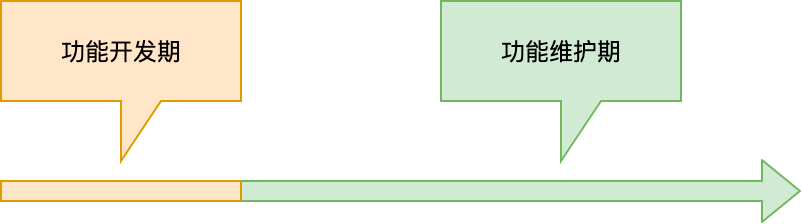
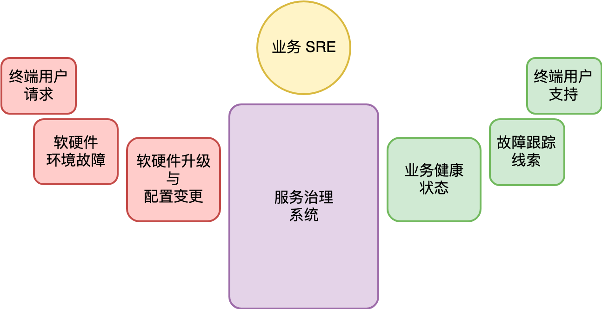

- 00 开篇词 怎样成长为优秀的软件架构师？.md.html
- 01 架构设计的宏观视角.md.html
- 02 大厦基石：无生有，有生万物.md.html
- 03 汇编：编程语言的诞生.md.html
- 04 编程语言的进化.md.html
- 05 思考题解读：如何实现可自我迭代的计算机？.md.html
- 06 操作系统进场.md.html
- 07 软件运行机制及内存管理.md.html
- 08 操作系统内核与编程接口.md.html
- 09 外存管理与文件系统.md.html
- 10 输入和输出设备：交互的演进.md.html
- 11 多任务：进程、线程与协程.md.html
- 12 进程内协同：同步、互斥与通讯.md.html
- 13 进程间的同步互斥、资源共享与通讯.md.html
- 14 IP 网络：连接世界的桥梁.md.html
- 15 可编程的互联网世界.md.html
- 16 安全管理：数字世界的守护.md.html
- 17 架构：需求分析 (上).md.html
- 18 架构：需求分析 (下) · 实战案例.md.html
- 19 基础平台篇：回顾与总结.md.html
- 20 桌面开发的宏观视角.md.html
- 21 图形界面程序的框架.md.html
- 22 桌面程序的架构建议.md.html
- 23 Web开发：浏览器、小程序与PWA.md.html
- 24 跨平台与 Web 开发的建议.md.html
- 25 桌面开发的未来.md.html
- 26 实战（一）：怎么设计一个“画图”程序？.md.html
- 27 实战（二）：怎么设计一个“画图”程序？.md.html
- 28 实战（三）：怎么设计一个“画图”程序？.md.html
- 29 实战（四）：怎么设计一个“画图”程序？.md.html
- 30 实战（五）：怎么设计一个“画图”程序？.md.html
- 31 辅助界面元素的架构设计.md.html
- 32 架构：系统的概要设计.md.html
- 33 桌面开发篇：回顾与总结.md.html
- 34 服务端开发的宏观视角.md.html
- 35 流量调度与负载均衡.md.html
- 36 业务状态与存储中间件.md.html
- 37 键值存储与数据库.md.html
- 38 文件系统与对象存储.md.html
- 39 存储与缓存.md.html
- 40 服务端的业务架构建议.md.html
- 41 实战（一）：“画图”程序后端实战.md.html
- 42 实战（二）：“画图”程序后端实战.md.html
- 43 实战（三）：“画图”程序后端实战.md.html
- 44 实战（四）：“画图”程序后端实战.md.html
- 45 架构：怎么做详细设计？.md.html
- 46 服务端开发篇：回顾与总结.md.html
- 47 服务治理的宏观视角.md.html
- 48 事务与工程：什么是工程师思维？.md.html
- 49 发布、升级与版本管理.md.html
- 50 日志、监控与报警.md.html
- 51 故障域与故障预案.md.html
- 52 故障排查与根因分析.md.html
- 53 过载保护与容量规划.md.html
- 54 业务的可支持性与持续运营.md.html
- 55 云计算、容器革命与服务端的未来.md.html
- 56 服务治理篇：回顾与总结.md.html
- 57 心性：架构师的修炼之道.md.html
- 58 如何判断架构设计的优劣？.md.html
- 59 少谈点框架，多谈点业务.md.html
- 60 架构分解：边界，不断重新审视边界.md.html
- 61 全局性功能的架构设计.md.html
- 62 重新认识开闭原则 (OCP).md.html
- 63 接口设计的准则.md.html
- 64 不断完善的架构范式.md.html
- 65 架构范式：文本处理.md.html
- 66 架构老化与重构.md.html
- 67 架构思维篇：回顾与总结.md.html
- 68 软件工程的宏观视角.md.html
- 69 团队的共识管理.md.html
- 70 怎么写设计文档？.md.html
- 71 如何阅读别人的代码？.md.html
- 72 发布单元与版本管理.md.html
- 73 软件质量管理：单元测试、持续构建与发布.md.html
- 74 开源、云服务与外包管理.md.html
- 75 软件版本迭代的规划.md.html
- 76 软件工程的未来.md.html
- 77 软件工程篇：回顾与总结.md.html
- 加餐 如何做HTTP服务的测试？.md.html
- 加餐 实战：“画图程序” 的整体架构.md.html
- 加餐 怎么保障发布的效率与质量？.md.html
- 热点观察 我看Facebook发币（上）：区块链、比特币与Libra币.md.html
- 热点观察 我看Facebook发币（下）：深入浅出理解 Libra 币.md.html
- 用户故事 站在更高的视角看架构.md.html
- 答疑解惑 想当架构师，我需要成为“全才”吗？.md.html
- 结束语 放下技术人的身段，用极限思维提升架构能力.md.html
- 课外阅读 从《孙子兵法》看底层的自然法则.md.html
- 捐赠
47 服务治理的宏观视角
你好，我是七牛云许式伟。
服务治理的目标
很多开发人员可能会习惯地认为，把软件开发出来交付给用户是其工作的结束。但实际上对于任何一个产品或者产品里面的某项功能来说，把东西开发出来只是个开始，实际上这个产品或功能在其被取代或去除之前，都会有很长一段时间的维护期。

上图是很基础的产品或功能的生命周期示意图。它并不只是对软件适用，而是对所有的商品适用。我们后面在 “软件工程篇” 中还会进一步探讨它。
对于这个示意图，我们核心需要理解的是两点：
其一，虽然功能开发阶段的成本是非常显性的，但是功能维护期，包括了功能迭代和售后维保，它的隐性成本往往更高。
其二，产品的功能开发期虽然有可能很短，但是它是起点，是源头。它每一分每一秒时间是怎么花的，很大程度上决定了这个产品或功能的最终维护代价。
互联网的诞生，对今天我们的生活产生了翻天覆地的影响。虽然细究起来它进入民用市场还只有短短二十多年的历史，但它的发展速度只能以 “恐怖” 来形容。
以互联网为载体的软件，它不只是在功能上要满足用户需求，还要提供健康的 24 小时不间断的服务。功能开发与维护的边界变得模糊，一些公司甚至每天都在发布新的版本。
要做到 24 小时不间断服务，这并不是那么容易的一件事情。
我们知道，传统意义上的操作系统，实现的是软件治理，它们的关注点是如何让众多的软件一起融洽相处，感觉上好像自己在独享着物理的硬件资源。
而服务治理的核心目标，除了软件治理外，更重要的是考虑如何确保这些软件能够真正做到 24 小时不间断的服务。
而这，才是服务端操作系统的使命。
服务治理系统
在上一讲，我们已经介绍了部分提供 24 小时不间断的服务所带来的挑战。但我们上一讲的侧重点在业务架构，所以我们主要关注点放在了对业务架构产生重要影响的内容，比如负载均衡和存储中间件。
从服务治理角度来说，把软件做出来只是一个开始。接下来我们面对的第一件事情，是如何把它发布出去。这就需要涉及部署、升级和版本管理等相关的话题。
软件在线上成功跑了起来，为用户提供了服务，我们接着面临的挑战是怎么保证它不会挂掉。这涉及非常多层面的事情。
首先是怎么知道服务是不是挂了，这就涉及监控与报警。在发现服务挂掉后，需要考虑尽快把它重启起来，恢复到正常的状态。
微观上某个软件进程挂掉不能影响到正常的服务。所以我们需要考虑各类故障域，尽可能全面地把单点故障的风险消除掉。
单点故障消除，有可能会是个运维问题，但更多时候我们也得从软件的业务架构层面去解决它。
服务治理并没有那么简单纯粹。虽然在理想情况下我们应该尽可能自动化所有故障的恢复，但故障的可能性太多，很多时候是我们无法提前预知的，这意味着人工介入无可避免。
所以，互联网不只是产生了服务端开发这样的工种，同时也产生了运维，或者说业务 SRE 这样的工种。
SRE 全称是 Site Reliability Engineer (网站可靠性工程师)，这是 Google 引入的一个职位，后被各类公司所借鉴。区别于传统意义上的运维，SRE 也是一个特殊的工程师群体，和服务端开发一样，他们肩负着自己独特的使命。
从服务端近年来的发展来看，产业进化的方向无不与服务治理相关：如何保证服务 24 小时不间断地运行。
故障基本上是难于避免的。可以导致故障的因素非常多。我们大体可以分为这么几个层面。
其一，软硬件升级与各类配置变更。变更是故障的第一大问题源头。保证系统不出问题的最简单的方法当然是不去升级。
但从用户的服务体验和竞争力的角度来说，升级又是必需的。所以这是一个服务端开发与 SRE 之间做平衡的问题。
其二，软硬件环境的故障也可能引发我们的服务异常。软硬件环境的故障包括：单机故障如硬盘坏、内存坏、网卡坏、系统死机失去响应或重启等。机房或机架故障如断网、断电等。区域性故障如运营商网络故障、DNS服务商故障、自然灾害比如地震等。
对于一个规模化的服务系统，从不间断服务的角度，低概率的软硬件环境故障就会变成必然事件。比如我们考虑，假设一块硬盘的寿命是三年，也就是说每 1000 天可能会发生一次故障，但如果我们的服务集群有 1000 块硬盘，这就意味着平均每天都会坏一块盘。
其三，终端用户的请求也可能引发故障。比较典型的场景是秒杀类，短时间内大量的用户涌入，导致系统的承载能力超过规划，产生服务的过载。当然还有一些场景比如有针对性的恶意攻击、特定类型的用户请求导致的服务端资源大量消耗等，都可能引发服务故障。
所以，一个合理的服务治理系统，不只是需要能够及时反应业务系统的健康状况。更重要的是，要在发生了故障的情况下，能够提供故障跟踪与排查的有效线索，方便业务 SRE 可以快速定位跟踪的根因（Root Cause），并进行及时的止损。
当然，大部分情况下服务是正常的。但这并不代表我们就不会遇到麻烦。从服务单例用户的角度来说，我们服务可能没有发生故障，但是我们的某个用户就是访问不了我们的服务，或者访问服务没有得到预期的结果。
从单例用户的支持角度，我们还需要考虑服务的可支持性。为什么我访问不了？为什么我点击某个按钮没有反应或者报错？如果我们不体系化去考虑这些问题，我们的售后支持将极其低效。
综上所述，一个服务治理系统看起来是这样的：

这很不容易。
服务治理的发展历程
服务治理的发展进程涉及面非常之广。有自动化，有业务架构改造，还有人力（SRE）。
最早，我们可能从最基本的脚本开始。我们可能 SSH 进入某一台机器，执行特定脚本。
最初的自动化努力给我们争取了足够的时间和必不可少的经验。
脚本的适用性如何？怎么才能让单个脚本不是 “任务” 的抽象，而是 “服务治理方法论” 的结果？
我们的期望，是把服务治理建立成自治系统，而不是简单的自动化系统。
基于这样的思考，人们逐渐建立了基于物理机器资源的服务治理体系。脚本成为了平台。而平台的形成，正是脚本的抽象化、产品化、普适化的结果。
把一个服务实例绑定在某一台物理的服务器，虽然让服务视图看起来很直观，但是这种绑定让我们应对物理资源故障变得被动，同时也不利于服务器资源的充分利用。
所以虚拟机和容器技术的诞生，促使人们开始探索物理资源和应用服务之间的解耦。而一旦我们完成了这一步，服务的逻辑视图就完全语义化了，它与物理资源就只是一个应用的过程。物理资源环境发生任何故障，都可以迅速在新的硬件设备上重新构建。
对 SRE 来说，机器的损坏和生命周期管理基本上已经不需要任何操作了。硬件已经被池化。成千上万的机器加入系统，或者出现问题，被修复，这一切都不需要 SRE 的任何操作。
这意味着，随着系统的层次结构不断上升，我们完成了从手动触发，到自动触发，到自主化。
这正是今天 DCOS（数据中心操作系统）走的路。
结语
今天我们对本章服务治理篇做了概要的介绍。服务治理不是纯理论，没有简洁的抽象问题模型，我们面对的是现实世界的复杂性。这些现实的复杂性，必然带来解决方案的复杂性。
直到今天为止，很多问题仍然没有被圆满解决。但是，它们的确已经在被解决的边缘。相关领域的探索与发展，日新月异。
如果你对今天的内容有什么思考与解读，欢迎给我留言，我们一起讨论。下一讲我们聊聊 “事务与工程：什么是工程师思维”。
如果你觉得有所收获，也欢迎把文章分享给你的朋友。感谢你的收听，我们下期再见。
© 2019 - 2023 Liangliang Lee. Powered by gin and hexo-theme-book.